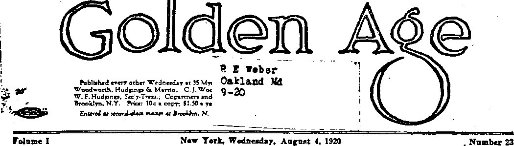

Temporary change in size and appearance of this magazine is due to shortage of print paper in New York City. See note below.
(Fart One)
THE thieves and murderers of Europe were always fond of the fields and mines and per-s'oual property of the denizens of other lands; and. they remain so to this day. When Pope Alexander VI drew his famous line through the Azores, .from pole to pole, giving everything west of that line to the Span-
ish monarch, he probably never once thought of the
’ command, “Thou shalt not steal”; and when Cortez invaded Mexico and covered the land with blood it is doubtful whether he knew there is such a mandate from the Almighty as “Thou shalt not kill”. Mexico traces her
' present-day trouble to these : errors.
The Mexico of today is 1,900 miles long, with a breadth varying from 750 to
• 130 miles. * It is a plateau . country; and the combina- • . tion of a tropic sun, a high elevation and a rich soil en-
TABLE of CONTENTS
Miay Lovable Traits 644
Carranza a True Patriot----- --------
What Say the Scriptures About Hell?-.—649 •*TTeH" as an English Word.....__
Explanatory Note
The shortage of paper still continues, but beginning October first The Golden Aoi win resume its usual size and increase the price fifty cents to cover the greatly Increased costs. This will make the price after October first $2.00 in the United States and $2.50 in Canada and in foreign territory. Meantime, however, subscriptions and renewals will be accepted, until September thirtieth inclusive, at the present price-— >1.50 domestic, and $2.00 Canada and foreign.
ables it to produce 90% of all the different agricultural products known to man, at the same time giving to a large/ part of the interior the climate of eternal spring—65° to 75° the year around. The rainfall is liberal; and the streams from the tablelands to the sea have cut wonderful canyons, 800 to 1,000 feet deep, creating a beauty and variety of scenery of remarkable interest.
In this beautiful land of Anahuac, as it was then called, the Aztecs of long ago developed a form of civilization blemished, it is true, but probably not worse than that which Cortez represented ; and in some respects it may have been better. At any rate it was a "self-determination of peoples”, and the people
then were happier than they have been since.
THE Ejido is the key to the Mexican question.
The Aztec government was a tribal one, and so devised that absolute poverty was an impossibility. Around every village was a great tract of land owned by the village as a whole. Every year the natives, by their elders in the town council, parcelled out the land that was to be worked by each family. Such a thing as private property in land was never known
among the Aztecs. None among them could become wealthy at the expense of the others, and none among them could become destitute if willing to work.
The ill and the aged were cared for, rights of person and property were enforced, marriage was sacred, and intemperance was frowned upon. There were courts of appeal; and even the Aztec emperor himself was held in check by a supreme court that protected the humblest subject against any attempted aggression. Great post-roads girdled the entire country. Upon these roads trained runners relayed messages to and from the remotest parts of the empire in an incredibly short time. Intensive farming, canals and irrigation ditches made Mexico a flower garden. The mines yielded almost illimitable treasures. The wealth of the Aztec nation knew no bounds. Gold, silver and precious stones were more plentiful with them than with any other nation of the ancient or modem world.
Upon this scene of peace and plenty the European savage Cortez landed in April, 1519, with 11 vessels, 700 Spaniards, 18 horses and 10 pieces of artillery. For hundreds of years the Mexicans had had the superstition that at some time white “gods” (!) would come from the East and dispossess them of their country. The landing of Cortez filled the people with terror; for they esteemed him and his followers to-be immortal gods whom it would be useless to resist.
Montezuma, the Aztec emperor, sent embassies to Cortez while he was still at Vera Cruz, attempting to dissuade him from invading the ■country. These embassies carried with them helmets full of gold dust, beautifully engraved gold and silver plate, and collars and bracelets of gold and silver, inlaid with precious stones. The more Cortez and his followers saw of these gifts the more rapacious they became; and Cortez himself, a man of intrepid courage and unspeakable devilishness, forced the issue by burning his shipg and sending one of Montezuma’s embassies back with both hands of every one of the fifty men cut off at his wrists.
By November 18 of the same year Cortez had reached Mexico City, then called Tenochtitlan; and although received with the greatest courtesy by the people he imprisoned their emperor, obliterated all records of the Aztec civilization, burned their great library, razed their monuments, killed their most intelligent representatives and left not a vestige of their original city when he began the rebuilding of the city in 1522.
Among the acts of Cortez which mark the character of the man, were the burning alive of an Aztec governor and sixty of his followers and the butchery of six hundred of the nobility in their temple, after he had given them permis
sion to assemble there for religious services, and had stipulated that they must come unarmed. In the city of Cholula, while the streets of the city were thronged with people attending a festival, he became suspicious; and at a given signal his men opened fire and killed thousands .of them. By these and similar methods of cruelty and terrorism he seized Mexico in the name of the Spanish sovereign. It is estimated that he and his brothers in arms in North and South America put to death fifteen million innocent persons within the first half century after the -discovery of America; but there were sections of Mexico, notably Yaqui land, that he did not conquer and that have never been subjugated even to this day. <
But bad as were the things that Cortez did to the generation then living, the thing that he did to the unborn generations of Mexicans for hundreds of years to come was worse. He took away from the people their ejidos, located obviously in the centers of the richest areas, and gave these lands to the Spaniards who came with him and who followed him. The natives . were driven away from the fertile and well watered valleys to hilly, wooded or semi-arid lands, there to struggle for a livelihood under much less favorable conditions,although millions of them w’ere denied even that privilege, and were branded with hot irons and made slaves of the colonists who now began to come from Spain in large numbers.
Unfamiliar with the, to the Aztec, vicious and unexplainable system of private ownership of land, the Mexicans lost more and more of their lands, some to the nobility, the great landlords, and some to the church, until today the descendant of the Aztec is virtually landless and homeless in the land of his fathers. Not all of the ejidos were lost at once; indeed, some of them are in existence to this day, and there are places in Mexico even now where the live stock of any villager may be pastured free of charge on the outskirts of the village, in a space allotted. But transfer of title away from the people who properly owned these areas into the hands of great and wealthy land holders has progressed from the time of Cortez onward.
The original idea of most of the so-called colonizing countries of Europe was to use the new countries merely as sources of raw material, and to do everything possible to repress their industries, the same as is still done in our generation with the cotton industries of India and Egypt; and until 1821 Mexico was so completely in subjection to Spain that no person born outside of Spain, even if of Spanish parents, could hold office of any kind in Mexico. Some of these Spanish viceroys were good men; many of them were bad men. Most of them were cruel and selfish, and not interested in Aztecs except as slaves. In many of them the capacity to think and act independently and effectively was stunted by the law of the Inquisition, "Thou shalt not think”; and force and cunning inevitably superseded true statesmanship.
The most conspicuous example of what private ownership of lands leads to in a country where the common people are ignorant of such a custom is that of General Luis Terrazas. At one time this man, now living in El Paso, held 70,000,000 acres in the state of Chihuahua—one-half of the state. He could ride all day north, south, cast or west and never go outside of his own land. The whole city of Chihuahua belonged to him. No one in the city could borrow money or buy property without his consent; and if any borrowed they paid, toward the last, 12% for the use of their money, all of which went into his coffers. He paid no taxes to anybody, had 30,000 • natives in his immediate service, worked them to the limit, paid them thirty or forty cents a day, compelled them to trade at his stores and virtually held them as slaves. He was supposed to be the largest land owner in the world. A comparison of the condition of the people under Terrazas with what- it might be if the ejidos which belonged to them were returned to their rightful owners led the gentleman and scholar and patriot, Francisco Madero, one of the finest characters of history, to devote his own great fortune of $30,000,000 to the overthrow of Diaz in the successful revolution of 1911. This land question in Mexico is really at the bottom of all Mexican troubles, and is one that will not down.
So many of the ejidos had fallen into the hands of a few aristocrats, and so many more had come under the control of the church, that when in 1857 the constitution was changed and the lands of the church were confiscated, the ejidos were confiscated with them, the thought apparently being to restore all their lands to the people, but by a system of private ownership instead of community ownership. The actual effect of the law was to make the condition of the people still worse than it had been; for the confiscated lands passed very quickly from religious to secular control, the great landlords bought them up for a song and the people in general were brought to a condition which amounted to slavery, as on the Terrazas estates.
The natives have never ceased to want their ejidos back. From generation to generation they talk about them; and in Carranza’s time an earnest effort was made to fulfill the promises many times made to them that this would be done. Carranza did actually bring about the restoration of 117 ejidos, covering 280,244 acres. Ten acres of this rich soil, bearing three crops a year, is sufficient to maintain a family of five persons, so that it may be said that Carranza, with all he failed to do, succeeded in repatriating 140,000 human beings on the soil which belonged to them and to their families. And who shall say that this was not a great work! How many other statesmen do we know that have succeeded in restoring 140,000 of the poor to their lost lands and lost liberties! Persons in Mexico at the time that some of these ejidos were returned to the people state that good soldiers to whom some of these ejidos belong in communal ownership suddenly threw away their guns and became the most pacific of farmers, not even waiting to finish the tasks in hand.
. ■>. ■
Parentage and Education
MEXICO has approximately two million white people of Spanish descent, six million Indians, largely Aztecs, and six million Mestizos, as they are called, descendants of the two races combined. Of the one hundred thousand, foreigners, about thirty thousand are Americans and five thousand are British. Few of the Indians are acquainted with the Spanish tongue; they are largely a passive element in the population. By the six million natives that do not speak Spanish there are spoken fifty different languages and almost innumerable dialects. It is claimed that 80% of the people are illiterate; and some have used this as an argument that they are not adapted to self-government. But we reflect that it is only a few generations since England passed laws providing for such of the English lords as could neither read nor write; and it does not at all follow that one who is without ability to read and write may not have as much good common sense as some people who have had great educational advantages.
The Indians who were able to keep in a measure aloof from the whites have fared better than those who were enslaved and brought into closer contact with their conquerors. Many of the latter lost their original tribal morality and acquired the vices which have been carried by European civilization throughout the earth— lying, stealing, immorality and drunkenness. Upon these poor peons, as they are called, has fallen the work of producing whatever Mexico has produced, whether in the mines or on the great estates. Forty years ago these peons were paid as little as six cents per day; but now they receive, in some places, as high as $1.50 to $2 for a day’s work. .
MAYOR Charles Davis, of El Paso, Texas, after thirty-eight years of experience says: “There are no better people than the Mexican merchants and professional men, while the Mexican peon is no trouble at all, and is not bloodthirsty if he is let alone”. Travelers report that the Mexicans are among the politest people in the world. A common form of salutation is, "May God go with you”, a form of salutation far above that which prevails in the most exclusive and self-satisfied portions of the United States. Hospitality and general goodness of heart are manifest everywhere. Orphans are never left without homes; and in cases of sickness, bereavement or misfortune the sympathy of the neighbors and of the whole community is generous, sincere and practical. Reverence for the Lord and marital faithfulness are said to be national traits. These things speak well for a land about which so much evil is alleged.
The family ties of the Mexicans are so strong that the men will go nowhere ■without their wives. If'the men are in service as engineers, firemen, conductors or trainmen, the wives go along as a matter of course. If the men go into battle the wives go along to care for the sick and wounded, to forage for food and to prepare meals for their husbands. The meals prepared under the most trying conditions are said to be remarkable for their neatness and delicacy.
Mexico has been pictured as a land of sombreros and bare feet; and while it is a fact that there are no sky-scrapers, yet there are compensating advantages. The people move leisurely in the streets, the flowers are more plentiful, the food is simpler, the houses are simpler and more beautiful, and the people are sunnier, and sweeter far than some of their neighbors—not mentioning any names.
The Mexicans have great fondness for art, for literature and for the sciences. They have an instinctive taste for music, a music noted for its pathos, simplicity, and passionate love. A guitar goes with every regiment into battle; and the music which it yields is not only wild, barbaric and impelling, as one would expect in the descendant of the Aztec, but it has in it also the grace and romance of the Castilian. When Caruso sang in Mexico City a few months ago fifteen thousand people came out to hear him in the old Plaza de Toros, where the bull fights were formerly held.
A collection of photographs of the governors of Mexican states shows that they compare favorably with an equal number of governors of American states. The faces bespeak intelligence, refinement and good breeding.
AS IN every other country, the political war
-which has been waged in Mexico in the past, and which the country still faces, is a fight between liberal a and reactionaries. The struggle has taken different forms at different times; and occasionally, as in the United States, men who were elected as liberals have turned out to be reactionaries, and the fight has had to be fouab.t all over again. Too long a lease of power makes any party or any man a reactionary. Evi Moses, the greatest lawgiver of history, could not stand forty years of uninterrupted power, and at the last arrogated to himself an authority which prevented his entering the promised land.
The fight in Mexico has ranged around the landless condition of the common people, and the liberals have at all times had the end in view of trying to do something worth while toward the bettering of their condition. When the tisht first opened in 1S57 it was largely against the church, on account of the fact that at that time the church held in fee simple three-fourths of the most valuable real estate in Mexico City; and vast tracts of land and haciendas of fabulous richness were in the possession of the priesthood all over the country while three-fourths of the population were absolutely landless. Many of these great estates were not cultivated, but merely held, tax free, for purposes of speculation. Much of the best real estate in and about Washington, D. C., is now held in the same way.
The Constitution of 1857, with its amendments of 1S73, called the Laws of Reform, providedfor liberty of speech, liberty of the press, liberty of faith and worship, the right of all denominations to establish schools and colleges, lawful -intermarriage of Catholics and Protestants, public schools for secular education, complete separation of church and state, prohibition of laws establishing or suppressing any religion, prohibition of legal recognition of religious festivals, prohibition of clerical vestments on the streets, prohibition of religious processions in the streets, prohibition of discourses advising disobedience to the law or advocating violence to any one, prohibition of gifts of real estate to religious institutions except for religious edifices, prohibition of monasteries and convents, prohibition of any law permitting the reestablishment of Jesuits or Sisters of Charity, prohibition of religious vows swearing away one’s liberty, the civil inspection of cemeteries and the opening of cemeteries for burial of all creeds and classes.
While these laws were in process of discussion, and as an evidence of how a really good man in the Catholic church viewed the situation, we quote from the Abbe Domenech, Chaplain of Napoleon’s Expeditionary Force to Mexico, words written in 1867:
“If the Pope should abolish all simoniacal livings, and excommunicate all the priests having concubines, the Mexican clergy would be reduced to a very small affair Nevertheless there are some worthy men among them, whose conduct as priests is irreproachable. In all Spanish America there are found among the priests the veriest wretches, knaves deserving the gallows, men who make infamous traffic of religion. Mexico has her share of these wretches. One of the greatest evils in Mexico is the exorbitant fee for the marriage ceremony. The priests compel the poor to live without marriage, by demanding for the nuptial benediction a sum that a Mexican mechanic, with his slender wage, can scarcely accumulate in fifty years of the strictest economy. This is no exaggeration.”
We are glad these words were written by the Abbe Domenech; for if they had been written by others we should have been inclined to think they were exaggerated.
John Lind, former governor of Minnesota, and President Wilson’s personal representative to Mexico, in the Savannah Morning News of April 28, 1920, speaking on the same general subject said:
“What poor Mexico needs is education, and it is very unfortunate that the influence of the Catholic church has been against schools in Merino. As in the United States, its influence has not been in the direction of establishing and maintaining public Schools.”
EXT year Mexico will celebrate her centennial. The struggle for liberty did not end with the overthrow of Spanish power in 1821. It has been going on ever since that time, with the usual disorders common to a thinly settled country, and especially a country where such a multitude of the people have been dispossessed of their lands. But the general course has been forward; and considering the difficulties Mexico has had to face, the progress has been all that could be expected.
In 1876 Porfirio Diaz was elected Preside nt a nd in many respects made an excellent one, although there is something to be said on both sides of the subject He believed frankly that his country would prosper best under a benevolent dictatorship, and he so shaped his course and so employed the military powers of the Republic that for seven terms of five years each he was the only cAndidate for the presidential office. He virtually made it a misdemeanor to vote for anybody but himself; and thus weakened the powers of political perception of the people just at the time when they most needed development.
Diaz was a capable administrator. He opened his country to foreign capital and thus indirectly educated the common people by enabling them to earn larger wages than previously. Moreover, in the larger cities, he established free schools, and there is no doubt that he honestly aimed at the education of the people. But this was opposed by bo th the landlords and the clergy, and he had a difficult path to follow. Moreover, when Morgans, Rockefellers and Guggenheims invest millions in foreign enterprises they seem entirely indifferent to the real interests of the people of those lands, but have a mania for extracting the last dollar, by fair means or foul, no matter what the effect may be on either the people or the government. Diaz had to deal with these men, and with others; and many ejidos
and other assets of the people found their way into the “holdings” of these great corporations ■ ere they could be induced to make the invest-1 ments upon which the prosperity of the country so much depended. American oil, copper, gold, । silver, cattle and plantation interests are in, tricately woven into Mexican affairs from the time of Diaz (1876-1911) onward.
In 1910, some eleven thousand families owned 44 percent of the national territory, including ' the bulk of the best arable soil. These estates were almost entirely free of taxation, the bulk I of the taxes being laid against the smaller hold) Ings. Many of the great landlords held thousands of acres idle right at the time when thousands of the common people were wandering, landless and homeless, from one mine or plantation to another, seeking a chance to earn bread. Moreover, many of the lands which were used were misused to the detriment of the poor, instead of to their benefit, by being given over to the production of the native liquor, pulque; and the producers of this liquor were and are against the efforts of the real statesmen, who are seeking prohibition for the same reasons that it was sought in the United States, i. e., as a step in the abolishment of shiftlessness, poverty and crime. ,
The thing that finally caused the overthrow of Diaz and forced him to flee was the action of Francisco Madero, in an effort to improve thes condition of affairs. Madero was influenced also by the arbitrary way in which election returns were handled by Diaz. Himself an anti-clerical he saw his able and patriotic friend, Vestuniano Carranza, deprived of a governorship to which he had been elected, and the clerical candidate inducted into office; and the result was the Mexican Revolution, which was victorious after three years of fighting.
There is a great amount of literature afloat to lead one to think that the chronic condition of Mexico is that of revolution, but this is not true. There is a great cause of unrest there, the landless condition of the common people. These people are seeking relief; and it is a fact that since the days of Madero there has been more unrest than ever before, because the people have had . their hopes aroused and not fully realized. Madero was a prince among men, but was not able to overcome the wealth, power and infiq-ence arrayed against giving the people a fair deal The circumstances under which he was murdered by the assassin Huerta indicate a conspiracy of base, subtle and tyrannical forces against him. President Wilson very properly refused to recognize Huerta in any way, and backed Carranza, the friend of Madero, in his successful fight to drive Huerta out of power.
IN THE seven years in which he guided the affairs of the Mexican people Carranza showed that he had their best interests at heart. Because of Zimmerman’s unaccepted advances he was frequently accused in the American press as pro-German in his sympathies, and somewhat vain and tactless; but the usual estimate of him was that he was a sincere man, honest, and trying to make Mexico a good place for Mexicans.
Carranza was instrumental in procuring some changes in the Mexican constitution which have been much criticised by the oil men, and we will have more to say of this hereafter. But the intent of these changes was to aid Mexico, and they are changes such as have been made in other lands and strongly advocated in the United States.
He gradually brought the entire country into a state of good order, and until recent years was liberally supplied with arms and ammunition for that purpose by the United States, according to the testimony of S. G. Hopkins before the Senate Mexican Committee. In 1915 he abolished bull fights by presidential decree. In March 11, 1917j he was elected President at an orderly election, and took the oath of office May 1, 1917. His administration was anti-clericah-and not favorable to either the privileged landowners or the foreign interests which were engaged in exploiting the natives, as indeed it could not be if he were to do for these poor peons all he hoped. There is no doubt that certain of these powerful enemies encouraged men to join Carranza’s armies so that they could secure rifles, cartridges and belts to be used against his efforts to maintain law and order. The great desertions from the ranks are thus explained.
Carranza's troubles with his armies date from the beginning of his regime. Never a lover of gilt braid, brass buttons and titles, he was unwilling to assume for himself the title of General, but in his campaign requested to be called merely First Chief. He has been blamed for not catching Villa; but if Pershing with 100,000 American troops was not able to catch him, it is no wonder Carranza failed. Villa helped Carranza to conquer Huerta; but the two disagreed, and Villa was a thorn in Carranza’s life for seven years. Carranza forced Huerta to resign on July 15,1914, and Villa declared war against Carranza September 23, 1914. But'Villa is no longer a serious factor in Mexican matters. He suffered a military defeat at Celaya, at the hands of General Obregon, and has never been able to regain his lost prestige.
This glorifying of successful warriors and belittling the achievements of great men who lose a single encounter is a common thing in history. Millions idealize the successful fighter, and there is no doubt that if General Pershing had ever gotten anywhere near the front line trenches he would today be the most popular figure in American life. His star fell when it came out in the Senate that in France he kept the security of the remote rear and avoided the fighting man’s chances of being killed.
Carranza believed that militarism is a curse in Mexico, as it was in Germany and as it is in every country, and tried to persuade the Mexican people to elect as his successor an anti-militarist, Senor Bonillas, Mexican ambassador to the United States. The pressing of this candidacy caused his own downfall and death.
As in the United States, so in Mexico, when anything goes wrong in the country the President is blamed for it; and when he experiences failing fortunes or defeat his followers begin to abandon him. He starts in as an idol; but when he is unable to do all he wishes to do, he gradually gains enemies, and when the tide starts to turn against him it turns quickly. As in the political conventions of the United States some men show great earnestness in their desire to pick the winning side early and to be found promptly on that side, so in Mexico.
Carranza went down in the rising of just such a tide. He had been declaiming against militarism as one of the curses of his country, whereupon several of his generals suddenly deserted him and combined together against him. He warned the Mexican people that those who had deserted him would quarrel among themselves (a not unlikely thing); and he appealed to the people for support, but too late.
Seeing what was coming, Carranza shifted Ids son-in-law, General Aguilar, to the command of the federal forces in Vera Cruz on May 1, 1920, so as to leave open a way of escape. He abandoned Mexico City May 7 and started for Vera Cruz; but at the last moment the Vera Cruz government went over to the revolutionists, and he had nowhere to go. Determined to attempt to retain the government, of which he was president, he properly took with him the funds in the treasury, $13,500,000, taken over at the time of his death. •
It is claimed that strict orders were given to spare Carranza's life and permit his escape; but if so, these orders were violated. The night that he was killed the . troops of General Herrera were acting as Carranza’s bodyguard. General Herrera himself assigned Carranza, not to adjoining stone houses, but to the wooden cottage in which his body was found, and helped to prepare his bed. At 3:30 A. M., while it was pitch dark, and the rain was falling, Carranza was killed by eight bullets entering his body. His last words were a request for a rifle that he might defend himself. General Herrera’s father had been executed by order of Carranza a few days earlier. When Carranza’s body was found, his shoes had been removed and his pockets turned inside out.
Senor Lopez, confidential agent of Carranza, claims that Carranza. was killed to prevent the publication of important papers which he carried, showing the conspiracy of Wall Street interests in the United States, in cooperation with political and ecclesiastical American and Mexican factions to overthrow the Mexican government and constitution. The one who is supposed to have caused Carranza’s death, General Herrera, volunteered to serve as his bodyguard, although he had been for years in the employ of General Pelaez, admittedly in the pay of the oil companies and in revolt against Carranza’s efforts to execute the laws on the Mexican statute books. He deceived Carranza by professing loyalty to him in his hour of need. Carranza’s own brother had a somewhat similar experience. He was imprisoned by his own escort, and executed. ,
The death of Carranza was promptly followed by a United States Senate resolution calling. for the policing of Mexico by the United States army; but there is no information to the effect that Mexico contemplated such action toward the United States after the assassinations of Lincoln, Garfield, or McKinley.
America has sometimes been at a loss to know how to make the best use of her ex-presidents; but they do not seem to have such embarrassments in Mexico, for they never have any. It seems to be the usual custom to kill them or drive them out of the country. Madero and Carranza were killed; Diaz and Huerta were driven out of Mexico. ,
SLAVERY was abolished in Mexico three years before it was abolished in the United States. The republic has 20,000 miles of up-to-date American railroads, a greater range of remarkable vegetation than any other country in the world; and before the World War it produced one-third of the world’s silver, one-ninth of its lead and a good share of its gold. It produces three crops annually and was pronounced by Humboldt the treasure house of the world. Mexican linens are among the best.
The city of Mexico has nine hundred streets, but the streets follow the London custom of several different names for the same continuous thoroughfare. These streets are broad, well paved, well kept and bordered with good sidewalks. An efficient and up-to-date traction service covers the city and its environs. In 1902 these lines carried thirty mill inn passengers. Mexico has 140 cotton mills.
The city also has a wonderful sewage system, piercing a mountain thirty miles distant.by a tunnel seven miles in length. Through this tunnel are led away the surplus waters which at various times in the past have flooded portions of the city.
The crops of Mexico in 1919 were the best in years; every one of its thirty states is highly productive. Under Carranza paper money gave way to metallic money; trade became better than was ever before known; public revenues were greatly improved.
When some American women, well fed on the propaganda which was flooding the papers of the United States a year ago, offered to spend $2,000,000 to $4,000,000 in charitable work in Mexico, the Mexican women sent back word that in their judgment the Amsrimn women would perhaps make a wiser use of the money in doing something for the three million to six million school children of the United States which the Children’s Bureau at Washington claims are slowing dying of insufficient food.
Financial Notes
CARRANZA was blacklisted by the great financial powers of New York, London and Paris because his attitude toward big business was not considered the correct one. None of these financiers would lend the Mexican government a cent; and as Carranza had various difficulties to face for which money was an urgent necessity, he resorted to means which other governments have used in such emergencies.
He took over and operated the railroads, telegraph, telephone lines, express companies and the street railway company of the city of Mexico. Foreign interests were largely represented in all of these plants. Americans had a 40% interest in the railways, the Wells-Fargo Company owned the express lines, the Pearson Canadian-American syndicate owned the street-car lines. .
The operation of the railroads under Carranza is said to have netted the government $5,500,000 a year, which is hundreds of millions better than the public press alleges that the United States government did while engaged in the same business; and the operation of the Traction Company is said to have netted a profit of $6,000,000 in the one year in which the government had charge of it. The express business was also a money maker, so that in the fall of 1919 the receipts of the Mexican Treasury were running ahead of expenditures by three million— to four million pesos a month or, say, $2,000,000.
During the seven years in which Carranza was in power, and in which he was unable to borrow anything, nothing was paid on the national debt of $100,000,000, owed principally to France and Belgium; but had it not been for his death he might soon have been able to begin the making of payments. He had a very difficult position to fill.
It is estimated that there is about $2,000,000,000 of foreign capital invested in Mexico, of which one-half is American.
Europe’s system of doing business with Mexico is to give four to eight months credit, while America’s system is to demand cash with order.
(T» ta CwUtatteA)
'To the law and to the testimony; if they speak not according to this word, it is because there is no light in them.”—Isaiah 8:29.
A CORRECT understanding of this subject has
•become almost a necessity to Christian steadfastness. For centuries it has been the teaching of “orthodoxy” of all shades that God, . before creating man, had. created a great abyss of fire and terrors, 'capable of containing all the billions of the human family which He purposed to bring into being; that this abyss He had —named “hell”; and that all of the promises and ' threatenings of the Bible were designed to deter : * as many as possible (a ‘"little flock”) from such . wrong-doing as would make this awful place - their perpetual home.
As knowledge increases and superstitions ■ fade, this monstrous view of the divine arrange. ment and character is losing its force; and thinking people cannot believe this legend, which used to be illustrated on the church walls in the high; est degree of art and realism, samples of which
' are still to be seen in Europe. Some now claim
' that the place is literal, but the fire symbolic, — etc., etc.; while others repudiate the doctrine of
* “hell” in every sense and degree. While glad
to see superstitions fall, and truer ideas of the • great, wise, just and loving Creator prevail, we ' are alarmed to notice that the tendency with all >• who abandon this long-revered doctrine is toward doubt, skepticism, infidelity.
Why should this be the case, when the mind is merely being delivered from an error, do you ask! Because Christian people have so long ■■■ been taught that the foundation for this awful blasphemy against God’s character and government is deep-laid and firmly fixed in the Word ’ of God—the Bible; and consequently to whatever degree that belief in “hell” is shaken, to that extent their faith in the Bible, as the revelation of the true God, is shaken also, so that those who " have dropped their belief in a “hell” of some kind of endless torment, are often open infidels and scoffers at God’s Word. Every step they progress in real intelligence and brotherly kindness, which hinders belief in eternal torment, is in most cases a step away from God’s Word, which is falsely accused of being the authority for this teaching.
Guided by the Lord’s providence to a realization that the Bible has been slandered, as well
as its divine Author, and that rightly understood it teaches nothing on this subject derogatory to God’s character nor to an intelligent reason, we will attempt to lay bare the Scripture teaching on this subject, that thereby faith in God and His Word may be reestablished in the hearts of His people, on a better, a reasonable foundation. Indeed, it is our opinion that whoever shall hereby find that his false view rested upon human misconceptions and misinterpretations, will at the same time learn to trust hereafter less to his own and other men’s imaginings, and by faith to grasp more firmly the Word of God, which is able to make wise unto salvation.—2 Timothy 3:15. .
That the advocates of the doctrine of eternal torment have little or no faith in it is very manifest from the fact that it has no power over their course of action. While all the denominations of Christendom sustain the doctrine that eternal torment and endless, hopeless despair will constitute the punishment of the wicked, they are mostly quite at ease in allowing the wicked to take their course, while they pursue the even tenor of their own way. Chiming bells, pealing organs, artistic choirs, costly edifices, upholstered pews and polished oratory which more and more avoids any reference to this alarming theme, afford rest and entertainment to fashionable congregations that gather on the Lord's day and are known to the world as churches of Christ and representatives of His doctrines. But they seem little concerned about the eternal welfare of the multitudes or even of themselves and their own families, though one would naturally presume that with such awful possibilities in view they would be almost frantic in their efforts to rescue the perishing.
The plain inference is that they do not believe this teaching. The only class of people that to any degree show their faith in it by their works is the Salvation Army; and these are the subjects of ridicule from almost all other Christians, because they are somewhat consistent with their belief. Yet their peculiar and often absurd methods, so strikingly in contrast with those of the Lord of whom it was written, “He shall not cry, nor lift up, nor cause his voice to be heard
in the street’ (Isaiah 42: 2), are very mild compared with what might be expected if they were fully convinced of the doctrine. We cannot imagine how sincere believers of this terrible doctrine go from day to day about the ordinary affairs of life, or meet quietly in elegance every Sunday to hear an essay from the pulpit on the peculiar subjects often advertised. Could they do so while really believing all the time that fellow mortals are dying at the rate of one hundred a minute, and entering
“That lone land of deep despair,” where “No God regards their bitter prayer” ?
If they really believed this, few saints could complacently sit there and think of those hurrying every moment into that awful state described by that good, well-meaning but greatly deluded man, Isaac Watts (whose own heart was immeasurably warmer and larger than that he ascribed to the great Jehovah), when he wrote the hymn—•
“Tempests of angry fire shall roll To blast the rebel worm, And beat upon the naked soul In one eternal storm.”
People often become frantic with grief when friends have been caught in some terrible catastrophe, as a fire or a wreck, though they know they will soon be relieved by death. Yet they pretend to believe that God is less loving than themselves, and that He can look with indifference, if not with delight, at billions of His creatures, enduring an eternity of torture far more terrible, which He prepares for them and prevents any escape from forever. Not only so, but they expect that they -will get literally into Abraham’s bosom, and will then look across the gulf and see and hear the agonies of the multitudes (some of whom they now love and weep over); and they imagine that they will be so changed, and become so like their present idea of God, so hardened against all pity, and so barren of love and sympathy, that they will delight in such a God and in such a plan.
It is wonderful that otherwise sensible men and women, who love their fellows, and who establish hospitals, orphanages, asylums, and societies for the prevention of cruelty even to the brute creation, are so unbalanced mentally that they can believe and subscribe to such a doctrine, and yet be so indifferent about investigating its authority 1
Only one exception can we think of—those who hold the.ultra-Calvinistic doctrine; who be- ’ lieve that God has decreed it thus, that all the efforts they could put forth could not alter the result with a single person; and that all the prayers they could offer would not change one iota of the awful plan they believe God has marked out for His and their eternal pleasure. These indeed could sit still, as far as effort for their fellows is concerned: but why sing the f praises of such a scheme for the damnation of -their neighbors whom God has told them to love as themselves?
Why not rather begin to doubt this "doctrine of devils”, this blasphemy against the great God, hatched in the “dark ages”, when a crafty priesthood taught that it is right to do evil that good may result?
But, says one, has not the error done some good? Have not many been brought into the churches by the preaching of this doctrine in the past ?
No error, we answer, ever did real good, but always harm. Those whom error brings into a church, and whom the truth would not move, are an injury to the church. The thousands terror- - , ized, but not at heart converted, whom this doctrine forced into the church, and who swelled her numbers and her wealth, diluted what little truth was held before, and so mingled it with their unholy sentiments and errors that to meet the changed condition of things the “clergy” found it needful to add error to error, and resorted to methods, forms, etc., not taught in the Scriptures and useless to the truly converted whom the truth controls. Among these were pictures, images, beads, vestments, candles, grand cathedrals, altars, etc., to help the unconverted heathen to a form of godliness more nearly corresponding to their former heathen worship, but lacking all the power of vital godliness.
The heathen were not benefited; for they were still heathen in God’s sight, deluded into aping what they did not understand or do from the heart. They were added “tares” to choke the “wheat”, without being profited themselves. The Lord tells who sowed the seed of this enormous crop. (Alatthew 13:39) The same is true of those who assume the name “Christian” today, and who are not really at heart converted by the truth, but merely frightened by the error or allured by promised earthly advantages of a social
or business kind. Such add nothing to the true church. By their ideas and manners they become stumbling blocks to the truly consecrated, and by their inability to digest the truth, the real food of the saints, they lead even the few true pastors to defraud the true "sheep” in order to satisfy the demands of these “goats” for something pleasing to their unconverted tastes. No; in no way has this error accomplished good except in the sense that God is able to make even the wrath of man to praise Him. So also He will overrule this evil thing eventually to serve His purposes. When by and by all men (during the Millennium) shall come to see through this great deception by which Satan has blinded the world to- God’s true character, it will perhaps awaken in them a warmer, stronger love for God.
Seeing, then, the unreasonableness of man’s view, let us lay aside human opinions and theories and come to the Word of God, the only authority on the subject, remembering that "God is His oath interpreter, and He will make it plain".
• "Hell” as an English Word
In the first place, bear in mind that the Old Testament Scriptures were written in the Hebrew language, and the New Testament in the Greek. The word “hell” is an English word sometimes selected by the translators of the English Bible to express the sense of the Hebrew word Sheol and the Greek words Hades, Tartaroo and Gehenna—sometimes rendered “grave” and "pit”.
The word “hell” in old English usage, before the theologians picked it up and gave it a new and special significance to suit their own purposes, simply meant to conceal, to hide, to cover; hence the concealed, hidden or covered place. In old English literature records may be found of the helling of potatoes—putting potatoes into pits—and of the helling of a house— covering or thatching it. The word hell was therefore properly used synonymously with the words "grave” and “pit", to translate the words Sheol and Hades as signifying the secret or hidden condition of death. However, the same spirit which was vailing to twist the word to terrorize the ignorant is willing still to perpetuate the error—presumably saying, “Let us do evil that good may follow”.
If the translators of the Revised Version Bible had been thoroughly disentangled from all clerical error and thoroughly honest, they would have done more to help the English student than merely to substitute the Hebrew word Sheol and the Greek word Hades, as they have done. They should have translated the words. But they were evidently afraid to tell the truth and ashamed to tell the lie; and so they gave us Sheol and Hades untranslated, and permitted the inference that these words mean the same as the word “hell” has become perverted to mean. Their course, while it for a time shields themselves, dishonors God and the Bible,, which the common people still suppose teaches a "hell” of torment in the words Sheol and Hades. Yet any one can see that if it was proper to translate the word Sheol thirty-one times “grave” and three timoa “pit”, it could not have been improper so to translate it in every other instance.
A peculiarity to be observed in comparing these cases, as we will do shortly, is that in those texts where the torment idea would be an absurdity the translators of the King James version have used the words “grave” or “pit”; while in all other cases they have used the word “hell’’. The reader, long schooled in the clerical idea of torment, reads the word “hell” and thinks of it as signifying a place of torment, instead of the grave, the hidden or covered place or condition. For example, compare Job 14:13 with Psalm 86:13. The former reads, “Oh, that thou wouldst hide me in the grave [Sheol]” etc., while the latter reads, “Thou hast delivered my soul from the lowest hell [Sheol]”. The Hebrew word being the same in both cases, there is no reason why the same word "grave” should not be used in both. But how absurd it would have been for Job to pray to God to hide him in a hell of eternal torture. The English reader would have asked questions, and the secret would have gotten out speedily.
While the translators of the Reformation times are somewhat excusable for their mental bias in this matter, as they were just breaking away from the old Papal system, our modern translators, especially those of the recent Revised Version, are not entitled to any such consideration. Theological professors and pastors of congregations consider that they are justified in following the course of the revisers in not explaining the meaning of either the Hebrew or Greek words Sheol or Hades; and by their use of the words they also give their confiding flocks
to understand that a place of torture, a lake of fire, is meant. While attributing to the ignorant only the best of motives, it is manifestly sheer duplicity and cowardice which induces educated men, who know the truth on this subject, to prefer to continue to teach the error inferentially.
But not all ministers know of the errors of the translators and deliberately cover and hide those errors from the people. Many, indeed, do not know of them, having merely accepted without investigation the theories of their seminary professors. It is the professors and learned ones who are most blameworthy. These have kept back the truth about “hell” for several reasons. First, there is evidently a sort of understanding or etiquette among them, that if they wish to maintain their standing in the “profession” they “must not tell tales out of school”; i. e., they must not divulge professional secrets to the “common people”, the ‘laity”. Second, they all fear that to let it be known that they have been teaching an unscriptural doctrine for years would break down the popular respect and reverence for the “clergy”, the denominations and the theological schools, and unsettle confidence in their wisdom. And, oh, how much depends upon confidence and reverence for men, when God’s Word is so generally ignored! Third, they know that many of the members of their sects are not constrained by “the love of Christ” (2 Corinthians 5:14), but merely by the fear of hell; and they see clearly, therefore, that to let the truth be known now would soon cut loose the names and the dollars of many in their flocks; and this, to those ■who “desire to make a fair show in the flesh” (Galatians 6:12) would seem to be a great calamity.
But what will be the judgment of God, whose character and plan are traduced by the blasphemous doctrine which these untranslated words help to support! Will He commend these unfaithful servants ! Will He justify their course 1 Will the Chief Shepherd call these His beloved friends, and make known to them His further plans (John 15:15), that they may misrepresent these also to preserve their own dignity and reverence! Will He continue to send forth “things new and old”, “meat in due season”, to the household of faith, by the hand of these unfaithful servants! No, such shall not continue to be His mouthpieces or to shepherd His flock. (Ezekiel 34:9,10) He will choose instead, as at the first advent, from among the laity—“the common people”—mouthpieces, and ■will give them words which none of the chief priests shall be able to gainsay or resist. (Luke 21:15) And, as foretold, “the wisdom of their wise men shall perish, and the understanding of their prudent men shall be hid”.—Isaiah 29: 9 -19.
"Hell” in the Old Testament
The word “hell” occurs thirty-one times in the Old Testament, and in every instance it is Sheol * in the Hebrew. It does not mean a lake of fire and brimstone, nor anything at all resembling that thought: not in the slightest degree! Quite . ’ the reverse: instead of a place of blazing fire it is described in the context as a state of “darkness” (Job 10:21); instead of a place where shrieks and groans are heard, it is described in the context as a place of-“silence” (Psalm 115: 17); instead of representing in any sense pain r and suffering, or remorse, the context describes it as a place or condition of forgetfulness. (Psalm 88:11,12) “There is no work, nor device, nor knowledge, in the grave [Sheol] ; whither thou goest.”—Ecclesiastes 9:10.
The meaning of Sheol is “the hidden state”, as applied to man’s condition in death, in and beyond which all is hidden, except to the eye of faith; hence, by proper and close association, the word was often used in the sense of grave—the tomb, the hidden place, beyond which only those who have the enlightened eye of the understanding can see resurrection, restitution of being. And be it particularly noted that this identical word Sheol is translated “grave” thirty-one times and “pit” three times in our common ver* sion by the same translators—more times than it is translated “hell”; and twice, where it is translated “hell”, the statement seemed so absurd, according to the present accepted meaning of the English word “hell”, that scholars have felt it necessary to explain in the margin of modern Bibles, that it means grave. (Isaiah 14: 9 and Jonah 2: 2) In the latter case, the hidden state, or grave, was the belly of the fish in which Jonah was buried alive, and from which he cried to God.
All Texts in Which "Sheol" Is Translated "Hell"
(1) Amos 9:2.—“Though they dig into hell, thence shall mine hand take them.” [a figurative expression;
but certainly pits of the earth are the only hells men can dig into]
(2) Psalm 16:10.—“Thou will not leave my soul in hell; neither wilt thou suffer thine Holy One to see corruption.” [This refers to our Lord’s three days in the tomb.—Acts 2:31; 3:15]
(3, 4) Psalm 18:5 and 2 Samuel 22:6—margin.— "The cords of hell compassed me about.” [A figure in which trouble is represented as hastening one to the tomb]
(5) Psalm 55:15.—“Let them go down quick into hell”—margin, “the grave”.
(6) Psalm 9:17.—“The wicked shall be turned into hell, and all the nations that forget God.” [This text will be treated later, under a separate heading]
(7) Psalm 86:13.—“Thou hast delivered my soul from the lowest hell”—margin, “the grave".
(8) Psalm 116:3.—“The sorrows of death compassed me, and the pains of hell gat hold upon me.” [Sickness and trouble are the figurative hands of the grave to grasp us]
(9) Psalm 139: 8.—“If I make my bed in hell, behold, thou art there.” [God’s power is unlimited : even over those in the tomb He can and will exert it and bring forth ail that are in the graves.—John 5: 28]
(10) Deuteronomy 32 : 22.—“For a fire is kindled in mine anger, and shall burn into the lowest hell.” [A figurative representation of the destruction, the utter ruin, of Israel as a nation, “wrath to the uttermost,” as the Apostle called it, God's anger burning that nation to the "lowest deep,” as Leeser here translates the word SheoL —1 Thessalonians 2:16]
(11) Job 11: 8.—“It [God’s wisdom] is as high as heaven; what canst thou do ? deeper than hell [than any pit] ; what canst thou know ?”
(12) Job 26:6.—“Hell [the tomb] is naked before him, and destruction hath no covering.”
(13 Proverbs 5: 5.—“Her feet go down to death; her steps take hold on hell [i. e., lead to the grave].”
(14) Proverbs 7: 27.—“Her house is the way to hell [the grave], going down to the chambers of death.”
(15) Proverbs 9:18.—“He knoweth not that the dead are there, and that her guests are in the depths of hell.” [Here the harlot’s guests are represented as dead, diseased or dying, and many of the victims of sensuality in premature graves from diseases which also hurry off their posterity to the tomb]
(16) Proverbs 15:11.—“Hell and destruction are before the Lord.” [Here the grave is associated with destruction and not with a life of torment]
(17) Proverbs 15:24.—“The path of life [leadeth] upward for the wise, that he may depart from hell beneath.” [This illustrates the hope of resurrection from the tomb]
(18) Proverbs 23:14.—“Thon shalt beat him with the rod, and shall deliver his soul from hell” [i. e., wise correction will save a child from vicious ways which
lead to premature death, and may also possibly prepare him to escape the “second death”] \
(19) Proverbs 27:20.—“Hell [the grave) ^and destruction are never full: so the eyes of man are never satisfied.”
(20) Isaiah 5:14.—"‘Therefore hell hath enlarged herself and opened her mouth without measure.” [Here the grave is a symbol of destruction]
(21, 22) Isaiah 14:9,15.—“Hell [margin, grave] from beneath is moved for thee, to meet thee at thy coming.” . . . “Thou shalt be brought down to hell” [the grave—so. rendered in verse 11]
(23) Isaiah 57:9.—"And didst debase thyself even’ unto helL” [Here figurative of deep degradation]
(24, 25) Ezekiel 31:15 - 17.—“In the .day when he went down to the grave, . . . I made the nations to shake at the sound of his fall, when I cast him down to hell with them that descend into the pit. . . . They also went down into hell with him, unto them that be slain with the sword.” [Figurative and prophetic description of the fall of Babylon into destruction, silence, the grave]
(26) Ezekiel 32: 21.—“The strong among the mighty shall speak to him out of the midst of hell with them that help him.” [A continuation of the same figure representing Egypt’s overthrow as a nation to join Babylon in destruction—buried]
(27) Ezekiel 32: 27.—“And they shall not lie with the mighty that are fallen of the uncircumcised, which are gone down to hell with their weapons of war: and they hare laid their swords under their heads; but their iniquities shall be upon their bones, though they were the terror of the mighty in the land of the living.” [The grave is the only “hell” where fallen ones are buried and lie with their weapons of war under their heads]
(28) Habakkuk 2 :5.—“Who enlargeth his desire as hell [the grave] and as death, and cannot be satisfied.”
(29) Jonah 2:1,2.—“Then Jonah prayed unto the Lord his God, out of the fish’s belly, and said, I cried by reason of mine affliction unto the Lord, and he heard me; out of the belly of hell cried I, and thou heardest my voice.” [The belly of the fish was for a time his grave.—See margin]
(30,31) Isaiah 28:15-18.—“Because ye have said, We have made a covenant with death, and with hell [the grave] are we at agreement; when the overflowing scourge shall pass through, it shall not come unto us, for we have made lies our refuge, and under falsehood have we hid ourselves: Therefore, saith the Lord, . . . Your covenant with death shall be disannulled, and your agreement with hell [the grave] shall not stand.” [God thus declares that the present prevalent idea, by which death and the grave are represented as friends, rather than enemies, shall cease; and men shall learn that death is the wages of sin, and that it is in Satan’s power (Romans 6:23; Hebrews 2:14) and not an angel sent by God]
All Other Texts Where “Sheol” Occurs— Rendered "Grave” and “Pit”
Genesis 37: 35.—“I will go down into the grave unto my son.”
Genesis 42: 38.-—“Then shall ye bring down my gray hairs with sorrow to thejrrave.” [See also the same expression in 44:29,31. The translators did not like to send God’s servant, Jacob, to hell simply because his sons were evil]
1 Samuel 2: 6.—“The Lord killeth, and maketh alive: he bringeth down to the grave, and bringeth up.”
1 Kings 2: 6, 9.—“Let not his hoar head go down to the grave with, peace. . . . His hoar head bring thou down to the grave with blood.”
Job 7: 9.—“He that goeth down to the grave.”
Job 14:13.—“Oh, that thou wouldst hide me in the grave, that thou wouldest keep me secret until thy wrath be past, that thou wouldst appoint me a set time, and remember me [resurrect me]!”
Job 17:13.—“If I wait, the grave is mine house: I have made my bed in the darkness.” [Job waits for resurrection—“in the morning”]
Job 17:16.—“They shall go down to the bars of the pit [grave], when our rest together is in the dust.”
Job 21:13.—“They spend their days in mirth, and in a moment go down to the grave.”
Job 24:19, 20.—“Drought and heat consume the snow waters: so doth the grave those which have sinned.” [All have sinned, hence “death passed upon all men,” and all go down to the grave. But all have been redeemed by “the precious blood of Christ”; hence all shall be awakened and come forth again in God’s due time— “in the morning”.—Bomans 5:12,18,19]
Psalm 6: 5.—‘Tn death there is no remembrance of thee; in the grave who shall give thee thanks ?”
Psalm 30: 3.—“0 Lord, thou hast brought up my soul from the grave: thou hast kept me alive, that I should not go down to the pit.” [This passage expresses gratitude for recovery from danger of death]
Psalm 31:17.—“Let the wicked be ashamed; let them be silent in the grave.”
Psalm 49:14,15, margin.—“Like sheep they are laid in the grave: death shall feed on them; and the upright [the saints—Dhniel 7:27] shall have dominion over them in the morning [the Millennial morning]; and their beauty shall consume, the grave being an habitation to every one of them. But God will redeem my soul from the power of the grave.”
Psalm S8: 3.—“My life draweth nigh unto the grave.”
Psalm 89:48.—“Shall he deliver his soul from the hand of the grave?”
Psalm 141: 7.—“Our bones are scattered at the grave’s mouth.”
Proverbs 1:12.—“Let us swallow them up alive as the grave: and whole, as those that go down into the pit” [L et, as of an earthquake, as in Numbers 16:30- 33].
Proverbs 30: 15,16.—“Pour things say not, It is enough: the grave,” etc.
Ecclesiastes 9:10.—“Whatsoever thy hand findeth to do, do it with thy might; for there is no work, nor device, nor knowledge, nor wisdom, in the grave, whither thou goest.”
Song of Solomon 8:6.—“Jealousy is cruel ais the grave.” .
Laiah 14:11.—“Thy pomp is brought down to the grave.”
Isaiah 38:10.—‘T shall go to the gate* of the grave: I am deprived of the residue of my years.”
Isaiah 38: 18.—“The grave cannot praise thee, death cannot celebrate thee: they that go down into the pit cannot hope for thy. truth.” .
Numbers 16:30-33.—“If . . . they go down quick into the pit, then shall ye understand. . . . The ground clave asunder that was under them, and the earth opened her mouth and swallowed them up, and their houses, and all the men that appertained unto Korah, and all their goods. They and all that appertained to them went down alive into the pit, and the earth closed upon them: and they perished from among the congregation.”
Ezekiel 31:15.—‘Tn the day when he went down to the grave.”
Hosea 13:14.—“I will ransom them from the power of the grave; I will redeem them from death. O death, I will be thy plagues; O grave, I will be thy destruction, repentance shall be hid from mine eyes.” [The Lord did not ransom any from a place of fire and torment, for there is no such place; but He did ransom all mankind from the grave, from death, the penalty brought upon all by Adam’s sin, as this verse declares]
The above list includes every instance of the use of the English word “hell” and the Hebrew word Sheol in the Old Testament. From this examination it must be evident to all readers that God’s revelations for four thousand years contain not a single hint of a “hell”, such as the word is now understood to signify. ~
"Hell” in the New Testament
In the New Testament, the Greek word Hades corresponds exactly to the Hebrew word Sheol. As proof see the quotations of the Apostles from the Old Testament, in which they render it Hades. For instance, Acts 2: 27, “Thou wilt not leave my soul in Hades,” is a quotation from Psalm 16:10, “Thou wilt not leave my soul in Sheol ’. And in 1 Corinthians 15: 54, 55, “Death is swallowed up in victory. O death, where is thy sting! O grave [Hades], where is thy victory!” is an allusion to Isaiah 25:8, “He will swallow up death in victory”, and to Hosea 13:
14, “O death, I will be thy plagues; 0 Sheol, I will be thy destruction.”
"Hell” from the Greek “Hades” .
' Matthew 11: 23.—“And thou, Capernaum, which art . exalted unto heaven, shalt be brought down to hell,” Luke 10:15: “Shall be thrust down to hell”. [In priv-ilegea of knowledge, and opportunity the city was highly favored, or, figuratively, “exalted unto heaven”; but because of misuse of God’s favors, it would be debased, or, figuratively, cast down to Hades, overthrown, destroyed. It is now so thoroughly buried in oblivion, that even the site where it stood is a matter of dispute. Capernaum is certainly destroyed, thrust down to Hades]
Luke 16:23.—“In hell he lifted up his eyes, being ■ in torments.” [A parabolic figure explained further along, under a separate heading]
Revelation 6:8.—“And behold a pale horse: and his name that sat on him was Death, and Hell followed with him.” [Symbolic of destruction or the grave]
Matthew 16:18.—“Upon this rock I will build my church; and the gates of hell shall not prevail against it.” [Although bitter and relentless persecution, even ■ unto death, should afflict the church during the gospel age, it should never prevail to her utter extermination; and eventually, by her resurrection, accomplished by her ,Lord, the church will prevail over Hades—the tomb]
• :: Christ in "Hell” (Hades) and Resurrected from "Hell” (Hades)—Acts 2:1,14, 22 - 31
“And when the day of Pentecost was fully come, . . . Peter . . . lifted up his voice and said, ... Ye men . of Israel, hear these words: Jesus of Nazareth, a man approved of God among you, . . . being delivered by the determinate counsel and foreknowledge of God [‘He was delivered for our offenses’], ye have taken and by wicked , hands have crucified and slain: whom God hath raised up, having loosed the pains [or bands] of death, because it was not possible that he should be holden of it [for the Word of Jehovah had previously declared His resurrection]; for David speaketh concerning him [personating or speaking for Him], ‘I [Christ] foresaw the Lord [Jehovah] always before my face; for he is on my right hand, that I should not be moved. Therefore did my j heart rejoice, and my tongue was glad; moreover also
j, my flesh shall rest in hope, because thou wilt not leave
; my soul in hell [Hades, the tomb, the state of death],
। neither wilt thou suffer thine Holy One to see corrup-
! tion. Thou [Jehovah] hast made known to me [Christ]
the ways of life’.’’ Here our Lord, as personified by the prophet David, expresses his faith in a resurrection.
Peter then proceeds, saying, “Men and brethren, let me freely speak unto you of the patriarch David, that he is both dead and buried, and his sepulcher is with us unto this day [so that this prophecy could not have referred to himself personally; for David’s soul was left in “hell** —Hades, the tomb, the state of death—and his flesh did see corruption]: Therefore being a prophet, and knowing that God had sworn with an oath to him, that of the fruit of his loins according to the flesh, he would raise up Christ to sit on his throne; he, seeing this before [prophetically], spake of the resurrection of Christ [out of “hell”—Hades, the tomb—to which He must go for our offenses], that his soul was not left in hell [Hades —the death state], neither his flesh did see corruption.” Thus Peter presents a strong, logical argument, based on the words of the prophet David—showing first, that Christ, who was delivered by God for our offenses, went to “hell”, the grave, the condition of death, destruction (Psalm 16:10); and, secomj, that according to promise he had been delivered from hell, the grave, death, destruction by a resurrection—a raising up to life; being created again, the same identical being, yet more glorious and exalted even to “the express image of the Fathers person”. (Hebrews 1:3) And now "this same Jesus” (Acts 2: 36), in His subsequent revelation to the church, declares:
Revelation 1:18.—“I am he that liveth and was dead, and, behold, I am alive forevermore; Amen; and have the keys of hell [Hades, the grave] and of death.”
Amen! Amen! our hearts respond; for in His resurrection we see the glorious outcome of the whole plan of Jehovah to be accomplished through the power of the Resurrected One who now holds the keys of the tomb and of death and in due time will release all the prisoners who are, therefore, called the “prisoners of hope”. (Zechariah 9:12; Luke 4:18) No craft or cunning can by any possible device wrest these Scriptures entire and pervert them to the support of that monstrous and blasphemous clerical tradition of eternal torment. Had that been our penalty, Christ, to be our vicarious sacrifice, must still, and to all eternity, endure such torment, which no one will claim. But death was our penalty, and “Christ died for our sins”, and “also for the sins of the whole world”.—1 Corinthians 15:3; 1 John 2: 2.
Revelation 20:13,14.—“And the sea gave up the dead which were in it; and death and hell [the grave] delivered up the dead which were in them: and they were judged, every man, according to their works. And death and hell [the grave] were cast into the lake of fire: this is’the second death.” [The lake of fire is the symbol of final and everlasting destruction. Death and hell [the grave] both go into it. There shall be no more death; “the last enemy that shall be destroyed is death.” —1 Corinthians 15:26; Revelation 21: 4]
(To te Continued.)
■2
ONE question for each day is provided by this Journal. The parent will And it interesting and helpful to have the child take up a question each day and to aid it in finding the answer in the Scriptures, thus developing a knowledge of the Bible and learning where to And In it the Information which is desired.
1. How did the Lord teach us to pray? .
Answer: “Thy kingdom come. Thy will be done on earth as it is in Heaven.” See Matthew 6:10.
2. How is God’s will done in Heaven?
Answer: It is done perfectly.
3. Is God’s ivill done on earth note as it is in Heaven? '
Answer: No. See Romans 3:10.
4. What advantage had the Jew up to the time of Christ’s first advent?
Answer: See Romans 3:1,2.
5. Did Jesus recognize the Jews as His people when He came?
Answer: See John 1:11.
6. Did any “receive Him”?
Answer: A very few did, but the rest rejected Him. See John 1:11,12.
7. Was God disappointed, or did He foreknow that Jesus tcould be rejected?
Answer: See Isaiah 53:1 - 7.
8. What advantage did the Jews hcfve thaf ’ac-^ ce.pted Jesus then? Jr
Answer: The advantage of becoming “sons of Gow*.;’ See John 1:12. **
9. Was not the house of Moses a house of sons?
Answer: No. They, were a house of servants. See Hebrews 3: 5, 6. .
10. Did Jesus preach to the Gentiles or recognize them as proper recipients, of God’s blessings?
Answer. No. See Matthew 15:22- 29.
11. To whom did Jesus tell His apostles to preach? .
Answer: See Matthew 10: 5, 6.
12. the Jewish house afterwards cast off?
Answer: See Matthew 23: 37, 38. ‘
13. Who was the first Gentile convert?
Answer: See Acts, 10th and 11th chapters.
14. How did God show St. Peter that the Gospel message was to go to the Gentiles?
Answer: By a vision of “clean and unclean” animals.
The Great Bible Commentary—600 pages
Every Christian and order-loving person should read it
Exposes the duplicity of the clergy; explains the cause of the distress of nations; and foretells the blessing of the people in the near future.
For the publication and circulation of. this book during the war many Christians suffered great persecution—being beaten, tarred and feathered, imprisoned, and killed.—Mark 13: 9.
edition, cloth-bound $1.00 postpaid
("The Finished Nfyjurj'’ and one year's subscription to this journal, $3.3})
International Bible Students Association, 124 Columbia Heights, Brooklyn, N. Y., U. S. A.